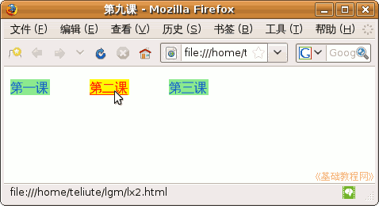

CSS 基础入门教程
作者：TeliuTe 来源：基础教程网
使用伪类可以设置链接的样式，比如改变颜色、去掉下划线等，下面我们来看一个练习；
1、文本编辑器
1）打开记事本或 gedit、leafpad 文本编辑器，gedit 在查看菜单里选择“HTML”；
2）点菜单“文件－打开”命令，打开自己文件夹里的 lx7.html
3）再点菜单“文件－另存为”命令，保存文件名为 “lx9.html”
2、设置伪类
1）在 head 区内，输入内部样式表，设定各个 <a> 的锚标记样式，如下；
<style type="text/css">
<!--
a {
display:block; width: 50px; background:#90ee90;
}
a:link {
color:#0066cc;text-decoration:none;
}
a:visited {
color:#800000;text-decoration:none;
}
a:active {
color:green;text-decoration:none;
}
a:hover {
color:red;text-decoration:underline; background:yellow;
}
-->
</style>
2）第一个 a 设定全局锚点的样式，用块显示、宽度是50像素、背景色是浅绿色，接下来是锚点 a 的成员：
link 是链接，设定页面中的链接样式，颜色蓝色，不带下划线，
visted 是访问过的链接，设定样式为栗色、不带下划线，
active 是按下鼠标时的链接，设定颜色为绿色、无下划线，
hover 是鼠标移过来悬停，设定颜色为红色、有下划线，背景色改成黄色，hover 放在其他几个成员的后面；
3）保存一下文件，回到自己的文件夹中，打开 lx9 网页，试着用鼠标点击、拖动链接，看一下效果；

本节学习了设置链接样式的基本方法，如果你成功地完成了练习，请继续学习下一课内容；
本教程由86团学校TeliuTe制作|著作权所有
基础教程网：http://teliute.org/
美丽的校园……
转载和引用本站内容，请保留版权信息和本站链接。